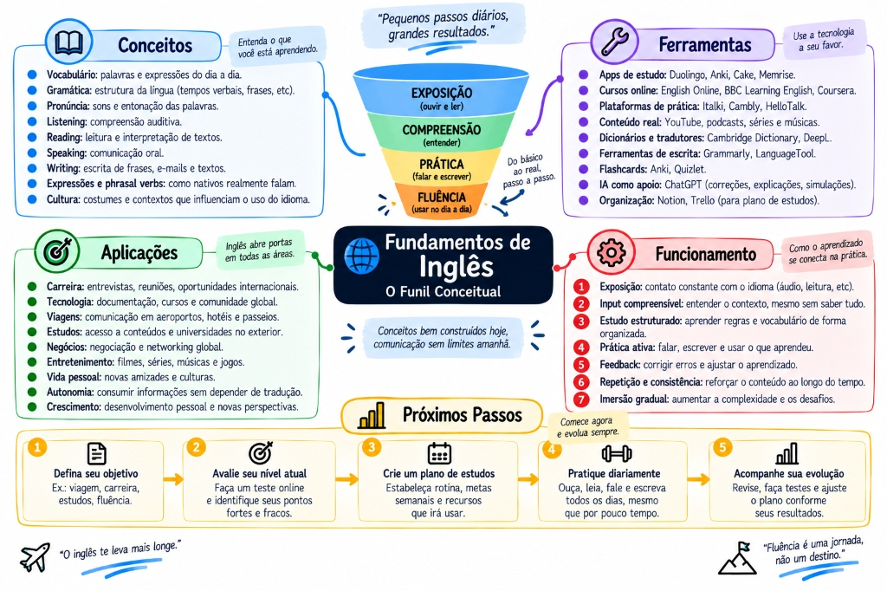

O décimo segundo documento, e o primeiro que não é sobre backend — é sobre o que faz os outros onze renderem. Toda fonte primária que eles citam está em inglês: a documentação do PostgreSQL, do Kubernetes, do Spring, o Pro Git, os livros da Biblioteca. Este documento está calibrado para um ponto específico: você lê documentação com esforço e trava em vídeo sem legenda. Por isso ele começa pela entrada — escuta e leitura — e só depois vai para a produção. Em cima, a trilha visual: 32 nós em 9 marcos. Embaixo, o conteúdo: 15 tópicos em 9 partes, com o funil conceitual, matriz de ferramentas e as frases prontas que você usa no standup, no code review e na reunião em que não entendeu o que disseram.

MAPA MENTAL PRINCIPALFUNDAMENTOS DE INGLÊS — O Funil Conceitual (Exposição → Compreensão → Prática → Fluência)
Medir antesO EF SET é gratuito e calibrado ao CEFR. Saber o ponto de partida muda o método.
Entrada primeiroEscuta e leitura constroem o que a fala depois usa. Forçar produção cedo trava.
Frases prontasCada situação do trabalho com o que dizer, em inglês e em português.
Sem vergonhaPedir repetição é habilidade profissional, não fraqueza.
↗
A trilha: da medição à reunião ao vivo
Comece por aqui. Siga o caminho de cima para baixo, clique em qualquer nó para abrir o painel — e use o modo teste para revisar sem reler.
01
Medir antes de estudar
"Meu inglês é mais ou menos" não é diagnóstico. E existe um teste gratuito e sério para trocar isso por um ponto concreto.
O CEFR e o teste que não custa nada
essencialfaça hoje
Direto: o EF SET é gratuito, adaptativo e o primeiro teste padronizado totalmente alinhado ao CEFR. Cinquenta minutos, sem agendamento, sem cartão. Faça hoje e anote o resultado com a data.
o caso
Você já tentou estudar inglês três vezes e parou. Uma das razões é invisível: sem ponto de partida, não existe progresso perceptível — e o que não se percebe não sustenta hábito.
Com um número na mão e outro daqui a seis meses, a mesma dedicação vira evidência. A variação é o dado, não o valor absoluto.
≈
Analogia. É o EXPLAIN ANALYZE do inglês. Você não otimiza consulta por intuição — roda o plano, vê onde está o custo, mexe, e roda de novo para comparar. Estudar idioma sem medir é otimizar sem plano.
O CEFR descreve o que a pessoa consegue fazer, não quanta gramática sabe — e é por isso que ele é útil. As faixas, traduzidas para a sua realidade:
Nível
No trabalho isso significa
A1–A2
Frases prontas, assunto previsível. Documentação técnica ainda é tradução.
B1
Lê com apoio, entende o assunto de um vídeo com legenda. Reunião ao vivo dói.
B2
O alvo prático. Acompanha reunião, escreve PR, sustenta entrevista de 45 min.
C1
Flui, lida com nuance e ironia. É o que vaga internacional costuma pedir.
C2
Aproximadamente nativo culto. Quase ninguém precisa — e mirar aqui adia o uso real.
O seu perfil tem um nome e uma solução conhecida. Ler melhor do que escutar é o padrão de quem aprendeu inglês por texto — documentação, código, legenda. A leitura te deu vocabulário e estrutura; faltou ligar isso ao som. Não é um problema de nível: é de canal. E é por isso que este documento inteiro começa pela escuta.
armadilhas
Tratar o resultado como veredito. É uma foto, e a foto de hoje serve para comparar com a de daqui a seis meses.
Mirar C2. Perfeccionismo disfarçado de ambição — e o custo é adiar o uso real por anos.
Não anotar a data. Sem ela, o segundo teste não significa nada.
pratique agoraAbra efset.org e faça o teste de 50 minutos. Anote nível, pontuação e data num arquivo que você vá encontrar em seis meses.
prova de domínioVocê sabe dizer o seu nível em letra do CEFR e o que falta, concretamente, para o próximo.
Certificação paga: quando vale e quando é ansiedade
decisão
Direto: certificação serve para provar nível a uma instituição. Para vaga de tecnologia, a prova é a entrevista — e ninguém pede certificado antes de marcá-la.
EF SET
gratuito50 min, online, alinhado ao CEFR. A opção de 4 habilidades emite certificado.
Duolingo English Test
~US$ 651 hora, totalmente online, adaptativo. Aceito por mais de 6.600 universidades.
TOEFL iBT
~US$ 200–250Padrão para universidade nos EUA. Centro de teste ou em casa.
IELTS
~US$ 230–260Padrão no Reino Unido e Austrália, com entrevista presencial de fala.
Quando vale: aplicação para universidade, processo de imigração, ou exigência formal explícita de um empregador. Quando não vale: praticamente todo o resto — inclusive vaga internacional remota de engenharia, em que a avaliação é a conversa com o time.
E a armadilha do "pago para me obrigar": muita gente compra a prova como compromisso forçado. Não funciona — dinheiro gasto não cria hábito diário, e o resultado costuma ser a prova adiada três vezes. Se você quer converter dinheiro em progresso, o mesmo valor de um TOEFL compra vários meses de conversação com professor, que é exatamente o que falta para quem lê bem e trava ao falar.
armadilhas
Estudar "para a prova" em vez de para usar. Você fica bom em fazer prova.
Adiar o uso real até ter certificado. A ordem correta é o contrário.
Confundir aceitação com equivalência. Cada instituição define a própria nota mínima; confirme antes de escolher o teste.
pratique agoraEscreva, em uma linha, para que você quer inglês. Se a resposta não envolve uma instituição pedindo comprovante, você acabou de economizar duzentos dólares.
prova de domínioVocê justifica a decisão de não certificar sem sentir que está se desculpando.
02
A entrada vem primeiro
O material certo é o que você quase entende inteiro. Essa frase resolve metade dos problemas de método.
Input compreensível e a regra dos 95%
essencial
Direto: adquire-se língua entendendo mensagens um passo acima do nível atual. A faixa útil é de 95 a 98% de compreensão — acima disso você não cresce, abaixo você decodifica em vez de adquirir.
≈
Analogia. É levantar peso. Leve demais não estimula; pesado demais você não levanta e ainda se machuca. O ganho está na faixa em que você quase não consegue — e essa faixa é mais leve do que o orgulho sugere.
De onde vem
A hipótese do input de Stephen Krashen, dos anos 1980. Os detalhes teóricos foram muito debatidos, mas o núcleo envelheceu bem: entrada compreensível é hoje aceita como necessária para aquisição, e a ideia sobrevive na pesquisa atual com outros nomes.
O que veio substituir: o método de gramática e tradução, em que se estudava a língua sobre a língua — conjugar verbo em tabela, traduzir frase solta. Ele produz quem sabe explicar o present perfect e não consegue pedir um café.
A crítica que também procede
Só entrada não basta. A hipótese do output aponta que produzir força você a processar a gramática, notar o que falta e testar hipóteses — coisas que escutar não exige.
A síntese honesta: entrada em volume, produção em baixa pressão desde cedo. Escrever um comentário de PR conta como produção.
Na prática, o teste é simples: se você precisa pausar mais de duas ou três vezes por minuto, o material está acima do seu nível. Não é falta de esforço — é a escolha errada de material, e insistir nela é o que cansa e faz desistir.
armadilhas
Escolher pelo interesse e ignorar o nível. Um podcast nativo a 180 palavras por minuto com 50% de compreensão não ensina nada — só frustra.
Confundir dificuldade com eficiência. Sofrer não é sinal de que está funcionando.
Ficar no confortável demais. Entender 100% é revisão, não aquisição.
pratique agoraPegue o último vídeo em inglês que você viu e estime sua compreensão sem legenda. Se ficou abaixo de 90%, procure algo mais fácil — não é regressão, é calibração.
prova de domínioVocê escolhe material novo pelo critério de compreensão, não pelo assunto ou pela recomendação.
Vinte minutos por dia vencem três horas no sábado
essencial
Direto: aquisição depende de exposição distribuída. Vinte minutos diários somam mais de duas horas por semana — e, o que importa mais, mantêm contato constante com o som.
o caso
O plano de uma hora por dia dura onze dias. Depois vem uma semana ruim no trabalho, o plano quebra, e a culpa faz você não voltar por seis meses.
Um plano de vinte minutos sobrevive à semana ruim — e é isso que faz dele superior, não a eficiência por minuto.
A ordem também importa, e ela não é a intuitiva. Escuta constrói o modelo sonoro; leitura acrescenta vocabulário e estrutura; produção testa e revela lacunas. Tentar falar antes de ter escutado o suficiente produz tradução mental — você monta a frase em português e traduz, o que é lento demais para uma reunião ao vivo. É exatamente esse mecanismo que faz travar.
Mas não espere estar "pronto" para produzir. A produção entra desde cedo, em baixa pressão: escrever, não falar ao vivo. Um comentário de PR em inglês dá tempo para revisar, tem retorno real, e é prática deliberada. A regra é: entrada em volume, saída sem plateia.
armadilhas
Plano ambicioso demais. O melhor plano é o que você ainda cumpre no pior dia do mês.
Contar escuta passiva como estudo. Passiva é manutenção; ativa é crescimento.
Parar depois de falhar um dia. Falhar um dia é ruído; falhar uma semana é sinal.
pratique agoraEscolha o horário de vinte minutos e amarre a um hábito que já existe — depois do café, antes do primeiro commit. Hábito novo pendurado em hábito velho sobrevive melhor.
prova de domínioVocê tem sete dias seguidos registrados. Esse é o marco que importa, não o conteúdo deles.
03
Escuta: o seu gargalo
Você lê melhor do que escuta porque aprendeu por texto. O conserto é ligar o que você já sabe ao som.
A escada da legenda
essencialo seu caso
Direto: legenda em português faz você ler, não escutar. Suba um degrau por vez — e no mesmo material, não em material novo.
o caso
Você assiste a uma palestra técnica com legenda em português e entende tudo. Tira a legenda e entende quase nada. A conclusão comum — "não adianta, meu inglês é ruim" — está errada.
O que aconteceu é que o áudio nunca foi processado: virou trilha sonora de uma leitura. A escuta não foi treinada porque nunca foi exigida.
≈
Analogia. É usar o preenchimento automático da IDE para tudo. Funciona, o código sai — e você não aprende a API. A legenda em português é o preenchimento automático da compreensão.
Os quatro degraus, e o que cada um treina:
Degrau
O que acontece
1. Legenda PT
Você lê. O áudio não é processado. Serve só para conhecer o conteúdo.
2. Legenda EN
O degrau que muda tudo para você. Liga som à grafia que você já conhece.
3. Só quando travar
Sem legenda; pausa e liga quando perder o fio. Treina tolerância à incerteza.
4. Sem legenda
O objetivo. Aceitar entender 90% e seguir.
A técnica que acelera: reassistir o mesmo vídeo um degrau acima vale mais que assistir um vídeo novo. Na segunda passada você já sabe o conteúdo, então a atenção fica livre para o som — que é exatamente o que precisa treinar. A sensação de "estou repetindo" é falsa: você está treinando outra coisa.
armadilhas
Pular do degrau 1 direto para o 4. Não entender nada e concluir que não tem jeito.
Esperar entender 100% para subir. O degrau seguinte é confortável em 90%.
Legenda dupla. Algumas extensões mostram as duas — e o olho vai para o português, sempre.
pratique agoraEscolha um vídeo técnico de 10 minutos que você já viu em português. Assista com legenda em inglês. Amanhã, assista de novo sem legenda.
prova de domínioVocê assiste a uma palestra técnica com legenda em inglês e acompanha sem reler.
Material no seu nível — e a técnica das três passadas
método
Direto: conteúdo técnico é mais fácil que série, mesmo com vocabulário mais difícil — porque você prevê o que vem. Use a sua maior vantagem.
≈
Analogia. Ler um stack trace numa linguagem que você não conhece ainda é mais fácil que ler um poema na sua. A estrutura previsível carrega você. É a mesma coisa com áudio sobre um assunto que você domina.
Série e filme são o material mais difícil que existe: gíria, sotaques variados, fala sobreposta, áudio misturado com trilha. Começar por aí é escolher a montanha mais íngreme. Palestra técnica gravada tem o oposto: fala pausada, vocabulário que você já conhece em português, legenda oficial e assunto previsível.
As três passadas transformam frustração em procedimento:
O procedimento
1ª: sem parar, para pegar o assunto geral. Não anote nada.
2ª: com pausa apenas nos trechos que impediram a compreensão.
3ª: sem legenda, seguido.
O detalhe que importa
Na segunda passada, anote só o que bloqueou — não toda palavra desconhecida. A maioria você adivinha pelo contexto, e anotar tudo mata o ritmo e transforma vinte minutos de escuta em uma hora de dicionário.
Se você pausa mais de duas ou três vezes por minuto, o problema não é sua atenção: é o material.
armadilhas
Começar por série. O material mais difícil, escolhido por ser o mais divertido.
Anotar toda palavra nova. Vira trabalho de tradução, não escuta.
Trocar de material toda vez. A repetição no mesmo material é onde o ganho acontece.
pratique agoraProcure uma palestra de conferência sobre um assunto que você domina — banco de dados, Kubernetes, Java. Aplique as três passadas esta semana.
prova de domínioVocê consegue explicar, em português, uma palestra técnica que assistiu sem legenda.
04
Leitura e vocabulário
Você já lê documentação todo dia. Faltam duas mudanças pequenas para isso virar aquisição.
A documentação como treino — e o vocabulário que realmente falta
essencial
Direto: o que te falta raramente é throughput ou idempotent. É albeit, whereas, provided that, unless otherwise specified — os conectivos que carregam a lógica da frase.
o caso
Você lê um parágrafo da documentação do PostgreSQL, entende todos os termos técnicos, e mesmo assim não sabe se a frase está afirmando ou ressalvando.
O que bloqueou não foi o vocabulário de domínio — foi um albeit, um whereas, um notwithstanding. São palavras invisíveis que decidem o sentido inteiro, e ninguém as ensina porque não parecem "técnicas".
≈
Analogia. É saber todos os nomes de classe de um código e não conhecer if, unless e else. Você lê os substantivos e perde a estrutura de controle.
As duas mudanças que transformam a leitura que você já faz:
Primeira: não traduza parágrafo. Leia até o fim e só volte se não entendeu a ideia. Traduzir frase a frase mantém a dependência do português e impede a leitura direta — que é o que você quer construir.
Segunda: anote estrutura, não termo técnico.Throughput você já sabe. Anote os conectivos que te fizeram reler.
Os conectivos que mais aparecem em documentacao tecnica:
albeit ainda que, embora
whereas ao passo que, enquanto (contraste)
provided that desde que
unless a menos que
hence / thus portanto
notwithstanding apesar de
insofar as na medida em que
accordingly consequentemente
conversely inversamente
namely a saber, isto e
regardless of independentemente de
subject to sujeito a
"The query will use the index, provided that the leading
column appears in the WHERE clause."
-> DESDE QUE. a frase inteira e uma condicao.
Um sinal prático de que você mudou de patamar: quando parar de reler a mesma frase duas vezes. Reler é quase sempre sintoma de conectivo não reconhecido — você entendeu as palavras e perdeu a relação entre elas.
armadilhas
Traduzir mentalmente frase a frase. Lento demais e impede a leitura direta.
Só anotar termo técnico. É o vocabulário que você menos precisa.
Ler só documentação. Ela tem registro estreito. Um livro técnico em inglês traz variedade que a documentação não tem.
pratique agoraNa próxima página de documentação, marque toda palavra não técnica que te fez reler. Se aparecerem cinco, você achou a sua lista de estudo da semana.
prova de domínioVocê lê um parágrafo de documentação e sabe dizer se ele afirma, ressalva ou condiciona — sem reler.
Frequência, repetição espaçada e os falsos amigos
essencial
Direto: mil famílias de palavras cobrem ~80% de um texto; três mil chegam perto de 95%. Como a faixa de aquisição é 95–98%, a meta é chegar às três mil e depois especializar.
≈
Analogia. É a distribuição de Zipf do System Design: 20% das chaves levam 80% dos acessos. Vocabulário se comporta igual — e por isso vale cachear o núcleo antes de se preocupar com a cauda.
Repetição espaçada
Revisar no momento em que você está prestes a esquecer. Cada acerto espaça o próximo intervalo, e o que se lembra fica cada vez mais barato de manter.
O que veio substituir: reler lista. Reler dá sensação de saber — você reconhece a palavra na página — sem construir a recuperação ativa, que é o que a reunião vai exigir.
O cartão que funciona
Com frase, não palavra solta: o contexto é metade da memória. E colhida da sua leitura, não de baralho pronto — a palavra que você encontrou na documentação de ontem tem gancho; a de uma lista genérica não tem.
cartão ruim
Frente: albeit
Verso: embora
Voce aprende a traduzir o cartao.
Nao reconhece a palavra em uso.
cartão bom
Frente: The migration succeeded, ______ slower
than expected.
Verso: albeit (ainda que / embora)
Contexto, lacuna, e a frase veio da SUA leitura.
E os falsos amigos, que são especialmente perigosos porque o erro soa natural e ninguém corrige:
actually na verdade (atualmente = currently)
eventually por fim, enfim (eventualmente = occasionally)
pretend fingir (pretender = intend)
realize perceber (realizar = carry out)
exquisite primoroso (esquisito = weird)
push / pull empurrar / puxar (e por isso git push e git pull)
O que mais pega em reuniao:
"We will eventually fix it."
Voce quis dizer "talvez, um dia".
Voce disse: "no fim das contas, vamos consertar" — uma PROMESSA.
armadilhas
Baralho pronto de 5.000 cartões. Abandonado em duas semanas. Cinco cartões seus por dia batem qualquer baralho comprado.
Decorar palavra difícil e travar em conectivo. Prioridade invertida.
Cartão só no sentido inglês → português. Reconhecer é mais fácil que produzir; treine os dois sentidos no que você quer usar.
pratique agoraCrie cinco cartões hoje, com frases retiradas de algo que você leu no trabalho. Cinco, não cinquenta.
prova de domínioVocê tem trinta dias de revisão sem interrupção — e reconhece, na leitura, palavras que aprendeu no cartão.
05
Pronúncia: inteligibilidade, não sotaque
O alvo é ser entendido sem esforço. Sotaque não é defeito — é origem.
Shadowing, e os sons que realmente mudam a compreensão
essencial
Direto: shadowing é repetir por cima do áudio, cerca de um segundo atrás, imitando a melodia — sem traduzir e sem esperar a frase terminar.
≈
Analogia. É tocar junto com a gravação, não estudar a partitura. Você treina o gesto inteiro — ritmo, respiração, ligação entre notas — em vez de notas isoladas. E é por isso que funciona para fluência de fala e não só para pronúncia de palavras.
Estudos apontam melhora significativa em entonação, fluência e pronúncia com a inclusão da técnica. A explicação é motora: você treina o gesto articulatório completo, não sons soltos. Funciona melhor do nível intermediário em diante, e como complemento — não como método único.
Como praticar, 10 minutos:
1. escolha 60 segundos de audio que voce JA entende inteiro
2. ouca uma vez acompanhando a transcricao
3. repita por cima, ~1 s atras, olhando o texto
4. repita sem o texto
5. GRAVE a sua versao e compare com o original
O passo 5 e o que quase todo mundo pula.
E o unico que mostra a diferenca entre o que voce
acha que falou e o que saiu.
Sobre o alvo: perseguir sotaque nativo é gastar energia no que menos muda resultado. O que atrapalha de verdade é outra coisa — e é corrigível. Sílaba tônica errada torna a palavra irreconhecível; sotaque, não. Vogal curta contra longa muda a palavra: ship e sheep, bit e beat. E a vogal acrescentada no fim — help-i, Facebook-i — é a marca mais forte do português e uma das mais fáceis de corrigir.
Os cinco que valem trabalhar
th de think e de this — dois sons diferentes.
Vogal curta × longa:ship/sheep, full/fool.
h aspirado de hello, que o português não tem.
Encontro final:asked, texts, worlds.
Sílaba tônica — a que mais muda compreensão.
O que não vale
O r perfeito. A escolha entre sotaque americano e britânico. Eliminar todo traço de português.
Ninguém no seu time se importa com isso. O que importa é a pessoa não precisar pedir "sorry, again?" três vezes — e isso se resolve com tônica e vogal, não com sotaque.
armadilhas
Shadowing em material difícil. O objetivo é a melodia; use algo que você já entende inteiro.
Nunca se gravar. Sem isso, você reforça o erro achando que está acertando.
Perseguir sotaque. Alvo caro e irrelevante profissionalmente.
pratique agoraGrave sessenta segundos lendo em voz alta, hoje. Guarde o arquivo. Grave o mesmo trecho daqui a trinta dias — a comparação é o retorno mais concreto que este documento oferece.
prova de domínioVocê identifica, na própria gravação, uma palavra com tônica errada — e corrige.
06
O trabalho escrito: onde você tem vantagem
Na escrita você controla o ritmo. É a porta de entrada para a produção — e já é o seu dia a dia.
Code review sem soar rude
essencialcaso real
Direto: em inglês profissional, o pedido direto soa mais duro que em português. Três suavizadores resolvem quase tudo: perguntar em vez de mandar, usar could/would, e separar sugestão de bloqueio.
o caso
Você escreve "Change this to a HashMap" num code review, achando que está sendo objetivo. Para o autor do PR, soa como ordem — e o clima da revisão muda sem que ninguém diga nada.
Você traduziu "muda isso para um HashMap" literalmente. Em português, o imperativo entre colegas é neutro; em inglês profissional, ele carrega hierarquia.
≈
Analogia. É a diferença entre DELETE sem WHERE e DELETE com condição. Tecnicamente os dois executam; um deles causa um estrago que você só percebe depois.
Change this to a HashMap.
Soa como ordem. Objetivo demais para o registro de revisão entre pares.
Could we use a HashMap here? It'd make the lookup O(1).
Melhor. Pergunta, justifica, deixa espaço para o outro discordar.
This is wrong.
Soa como julgamento. E se você estiver errado, fica pior ainda.
I think this might break when the list is empty — did I miss something?
Melhor. Aponta o cenário concreto e admite a própria falibilidade.
As marcacoes que todo time entende:
nit: detalhe de estilo, pode ignorar
blocking: precisa mudar antes de eu aprovar
question: duvida genuina, nao critica disfarcada
praise: elogio — use, e raro e faz diferenca
LGTM Looks Good To Me
PTAL Please Take Another Look
WDYT What Do You Think?
IIRC If I Recall Correctly
FWIW For What It's Worth
Uma sutileza que vale saber: o excesso também comunica. Encher de maybe, just, I might be wrong but em toda frase enfraquece o retorno e faz você parecer inseguro. O equilíbrio é: suavizar a forma, manter firme o conteúdo. "This will break with an empty list" dito com dado é firme e educado ao mesmo tempo.
armadilhas
Traduzir o imperativo literalmente. A fonte de atrito mais comum e mais invisível.
Suavizar demais. Retorno que ninguém entende como pedido não é retorno.
Nunca elogiar. Revisão só com crítica cria defensividade — praise: custa cinco segundos.
pratique agoraPegue o seu último comentário de review em português e reescreva em inglês usando os três suavizadores. Use no próximo PR.
prova de domínioVocê dá um retorno bloqueante em inglês sem que o autor fique na defensiva.
Mensagem assíncrona: contexto primeiro, pergunta antes
time distribuído
Direto: em time distribuído, cada troca custa horas de fuso. A estrutura da mensagem importa mais que a gramática dela.
o caso
Você manda "Hi! Are you there?" às 9h. A pessoa responde "Hi!" às 15h. Você faz a pergunta às 15h05. Ela responde no dia seguinte.
Dois dias para uma pergunta de trinta segundos. O custo não foi o inglês — foi a estrutura.
antes — custa dois dias
Hi! Are you there?
depois — resolve num ciclo
Hi! Quick question about the payment service —
I'm getting a 409 on POST /charges with an
idempotency key I've used before. Is that the
expected behavior, or a bug?
I checked the docs and the logs, no clue so far.
No rush — tomorrow works.
A estrutura que funciona tem quatro partes: a pergunta logo no começo, o contexto mínimo necessário, o que você já tentou — que evita a resposta "já olhou a documentação?" — e a urgência real. Essa última é subestimada: dizer "no rush" quando não é urgente compra boa vontade para quando for.
E sobre a gramática: ela importa menos do que você teme. Mensagem escrita com erro pequeno e estrutura boa resolve o problema; mensagem impecável e mal estruturada custa dois dias. Priorize clareza e estrutura, e aceite o erro pequeno — ninguém vai reparar.
armadilhas
"Hi" sozinho. Custa um ciclo de fuso inteiro.
Contexto longo antes da pergunta. A pessoa abandona no terceiro parágrafo.
Não dizer a urgência. Sem ela, tudo parece urgente — ou nada parece.
Revisar dez vezes. O tempo gasto na perfeição vale mais aplicado na estrutura.
pratique agoraEscreva a sua próxima dúvida ao time no formato de quatro partes, em inglês. Meça quantas trocas levou até a resposta.
prova de domínioSuas perguntas assíncronas costumam ser resolvidas na primeira resposta.
07
A reunião ao vivo
Onde todo mundo trava. E onde as três habilidades que resolvem não são de gramática.
Não entendi: a habilidade mais subestimada
essencialcaso real
Direto: quem pede repetição passa por cuidadoso, não por limitado. Nativos também pedem — você só não reparava, porque quando eles pedem não soa como deficiência.
o caso
Na reunião, alguém diz algo rápido sobre a ordem entre o retry e o fallback. Você não pega a metade final. Acena, anota "retry / fallback", e segue.
Duas semanas depois, a implementação está invertida. O custo do mal-entendido de trinta segundos foi duas semanas — e o custo de ter perguntado seria de três segundos.
≈
Analogia. É engolir uma exceção com catch (Exception e) {}. O programa continua rodando e parece que está tudo bem. O erro aparece longe da causa, quando já é caro.
Existem três níveis, e o terceiro é o que separa quem se vira de quem é eficaz:
Sorry, could you repeat that?
Nível 1 — repetir. Resolve quando você perdeu o áudio, não o sentido.
Could you say that again, a bit slower? / Sorry, I didn't catch the last part.
Nível 2 — específico. Diz o que faltou, então a pessoa não repete tudo igual.
Just to make sure I got it right: you want the retry to happen before the fallback, not after?
Nível 3 — confirmar. O melhor dos três. Você devolve o entendimento e a pessoa corrige na hora.
Por que o nível 3 é superior: ele não expõe que você não entendeu — expõe que você está verificando. É a mesma prática que o documento de Arquitetura chama de confirmar a decisão antes de executar, e ninguém a associa a limitação. Além disso, funciona mesmo quando você entendeu: reduz mal-entendido dos dois lados.
Varie, para nao repetir a mesma frase toda hora:
Sorry, could you repeat that?
Sorry, I missed the last bit.
Could you say that again, a bit slower?
I want to make sure I follow — you said X, right?
Let me repeat it back: the deadline is Friday, not Wednesday?
So if I understand correctly, you're asking whether...
E quando e so uma palavra:
Sorry, what does "throttling" mean in this context?
(perguntar significado NAO e vergonha — inclusive
entre nativos, porque o termo pode ser interno do time)
armadilhas
Acenar e seguir. O erro mais caro desta parte inteira.
Repetir sempre a mesma frase. É a repetição que chama atenção, não o pedido.
Pedir só no fim. Perguntar no momento custa três segundos; perguntar depois custa reconstruir o contexto.
Se desculpar demais. Um sorry basta. Três seguidos deslocam o foco para o seu inglês.
pratique agoraNa próxima reunião — em português, inclusive — use a confirmação de nível 3 uma vez. O hábito é o mesmo nos dois idiomas, e treinar no confortável facilita usar no difícil.
prova de domínioVocê pede confirmação sem sentir que está admitindo uma falha.
Tomar a vez e ganhar tempo
participação
Direto: em reunião com nativos, a vez é tomada, não concedida. Esperar a pausa educada costuma significar não falar.
o caso
Você tem uma objeção importante sobre o desenho proposto. Espera o momento certo. A conversa muda de assunto. A decisão é tomada sem a sua observação — e você sai da reunião com a sensação de ter sido invisível.
O problema não foi o inglês: foi esperar um silêncio que não vem. Falantes nativos se interrompem o tempo todo, e isso é neutro na cultura da reunião.
≈
Analogia. É esperar o pool de conexões esvaziar sozinho. Não esvazia — tem sempre alguém pedindo. Ou você entra na fila com uma estratégia, ou fica fora.
Frases de entrada resolvem porque fazem duas coisas ao mesmo tempo: sinalizam que você vai falar e compram o segundo que você precisa para montar a frase.
--- tomar a vez ---
Can I jump in here?
Can I add something to that?
Quick thought on that —
Building on what Sarah said...
Sorry to interrupt, but I think this matters:
--- se atropelaram voce ---
Sorry, I wasn't finished — just one more thing.
Let me finish that thought.
--- ganhar tempo, o que TODO nativo faz ---
That's a good question — let me think for a second.
Well, it depends on...
I mean, the way I see it...
So, if I understand correctly, you're asking whether...
--- quando realmente nao sabe ---
I'm not sure — let me check and get back to you today.
(e depois VOLTE. isso vale mais que ter sabido na hora)
Sobre "ganhar tempo": isso não é enrolação — é fala natural. Todo nativo usa well, I mean, let me think exatamente com essa função. O que soa mal é o silêncio longo, que o outro interpreta como não ter entendido, e o ãããã em português, que quebra o ritmo e chama mais atenção que a pausa.
o par deste documentoTomar a vez, sustentar posição e lidar com interrupção são habilidades de comunicação, não de idioma — elas aparecem em português também. O tratamento completo está em Oratória e comunicação; aqui está só a camada linguística.
armadilhas
Esperar o silêncio perfeito. Ele não vem.
Preparar a frase inteira antes de abrir a boca. Quando terminar de montar, o assunto mudou. Comece com a frase de entrada e monte o resto falando.
Sumir depois do "let me check". A promessa não cumprida custa mais que não ter sabido.
pratique agoraDecore duas frases de entrada. Duas, não dez. Use uma na próxima reunião, mesmo que só para concordar com alguém.
prova de domínioVocê entra numa conversa em andamento sem esperar ser convidado — e sem pedir desculpas por isso.
08
A entrevista em inglês
Quarenta e cinco minutos sustentados sob pressão — e o que é avaliado não é a gramática.
System Design em inglês: narrar enquanto pensa
essencialcaso real
Direto: a entrevista de System Design é uma prova oral. E o nosso documento de System Design já lista, entre os erros eliminatórios, pensar sem narrar — que em inglês vira o erro dobrado.
o caso
O entrevistador propõe o problema. Você entende, sabe a resposta, e fica trinta segundos em silêncio montando a frase em inglês.
Do outro lado, o silêncio é lido como não saber. Você tinha o conteúdo e perdeu no canal — que é exatamente a situação que este documento inteiro existe para evitar.
≈
Analogia. É o processo que não emite log. Ele pode estar trabalhando perfeitamente; de fora, é indistinguível de travado. Narrar é o stdout do seu raciocínio.
A boa notícia é que a estrutura do documento de System Design funciona como roteiro linguístico. Perguntar antes de propor não é só bom método — dá tempo. Cada etapa tem frases previsíveis, e frase previsível é frase que você pode ensaiar.
--- abertura: comprar tempo com boa pratica ---
Before I start designing, can I ask a few questions?
When you say 10k requests per second — is that HTTP
requests, or database queries?
What's the read/write ratio?
What latency are we targeting — p95 or p99?
--- narrar o raciocinio ---
Let me think out loud here.
My first instinct is X, but that would mean Y, so maybe Z.
I'm going to start simple and add complexity as we go.
Let me write down the constraints first.
--- nomear o preco, que e o que impressiona ---
One trade-off here is that we gain X but pay Y.
This buys us speed, but it costs us consistency.
I'd want to measure before deciding.
--- fechar com honestidade ---
If I had more time, I'd also look into...
I'm not confident about this part — in a real project
I'd validate it with a load test.
O que realmente é avaliado: se você consegue trabalhar com o time. Erro de tempo verbal não reprova ninguém. O que reprova é não conseguir explicar uma decisão, responder outra coisa por não ter pedido esclarecimento, ou travar e desistir. Gastar a preparação com gramática em vez de narração em voz alta é otimizar o recurso errado.
E a única pergunta que vale ensaiar de verdade é a de abertura. Tell me about yourself abre quase toda entrevista, você sabe que vem, e começar bem compra confiança para o resto. Dois minutos, três partes: o que faz hoje, uma coisa relevante que construiu, por que esta vaga.
I'm a backend engineer, mostly Java and Spring, with about
X years of experience.
Most recently I worked on [sistema] — the interesting part
was [problema concreto e o que voce decidiu].
I'm looking for [o que a vaga tem] because [motivo real].
2 minutos. Ensaie em voz alta, GRAVANDO. Nao decore palavra —
decore a estrutura, e deixe as palavras mudarem.
onde a teoria moraO método, as perguntas de carga e a escada de decisão estão em System Design completo — aqui eles viram roteiro de fala. Conduzir o tempo, lidar com interrupção e com pergunta hostil estão em Oratória e comunicação.
armadilhas
Silêncio para montar a frase. Narre o processo enquanto monta: "let me think out loud" resolve.
Decorar a resposta palavra por palavra. Soa artificial e desmorona na primeira pergunta de acompanhamento.
Pedir desculpa pelo inglês no começo. Chama atenção para o que ninguém tinha notado ainda.
Não perguntar nada. Em System Design, perguntar é a primeira parte da resposta.
pratique agoraGrave dois minutos respondendo tell me about yourself. Ouça. Você vai querer refazer — e é essa a segunda gravação que vale.
prova de domínioVocê narra um raciocínio técnico incompleto em inglês, em voz alta, sem parar para traduzir.
09
Como aprender de verdade: o ciclo e o laboratório
A constância é o mecanismo. A intensidade é ilusão de progresso.
O ciclo diário, as fontes e os 30 dias
obrigatório
Direto: vinte minutos de entrada, cinco frases anotadas, revisão espaçada, e um uso real no mesmo dia. O uso pode ser uma frase num comentário de PR — isso já fecha o ciclo.
Fontes que valem, e por quê. Para pronúncia, Rachel's English é a referência em mecânica articulatória — ela mostra a posição da boca, que é o que falta em quase todo material. Para escuta graduada, material de notícias em velocidade reduzida e conferências técnicas com legenda oficial. Para inglês do trabalho, existe hoje conteúdo específico de inglês para tecnologia cobrindo standup, code review e reunião — e ele é mais útil que curso geral, porque trabalha o vocabulário que você já domina em português.
Em português, sobre método: prefira quem fala de aquisição e input a quem promete fluência em trinta dias. A regra que mais economiza tempo: escolha duas fontes e fique com elas por três meses. Trocar de método toda semana é a forma mais comum de não sair do lugar — e é confortável, porque sempre parece que você está fazendo algo.
o laboratório de 30 dias
SEMANA 1 — medir e comecar a entrada
[ ] EF SET: anote nivel, pontuacao e data
[ ] 20 min/dia de escuta com legenda EM INGLES
no mesmo material tecnico
SEMANA 2 — vocabulario
[ ] mantenha os 20 min
[ ] + 5 cartoes/dia, com FRASE, colhidos da sua leitura
de documentacao
SEMANA 3 — producao em baixa pressao
[ ] mantenha os 20 min + cartoes
[ ] + 10 min de shadowing
[ ] grave 60 s da sua voz e guarde o arquivo
SEMANA 4 — uso real
[ ] mantenha tudo
[ ] escreva 3 comentarios de PR em ingles
[ ] prepare o standup por escrito antes de falar
DIA 30
[ ] refaca o EF SET
[ ] regrave os mesmos 60 s e compare com a semana 3
O registro:
data | min de entrada | 5 frases | 1 uso real
O que registrar, e por quê: a variação é o dado — não o valor absoluto. Se no dia 30 o EF SET não mudou de faixa, isso é normal: trinta dias raramente mudam de nível CEFR. O que muda é a gravação, e é ela que dá o retorno emocional que sustenta o hábito até o ponto em que o nível se move.
o par e a bancadaA camada de comunicação — narrar, sustentar posição, conversa difícil — está em Oratória e comunicação. E todos os documentos do acervo citam fontes primárias em inglês: a documentação do Kubernetes, do PostgreSQL, do Spring, o Pro Git. Cada uma delas é material de escuta e leitura calibrado ao seu interesse.
pratique agoraFaça o EF SET hoje e marque o horário dos vinte minutos no calendário, amarrado a um hábito que já existe.
prova de domínioVocê tem trinta dias registrados e duas gravações da sua voz para comparar.
O Funil Conceitual, a Matriz de Ferramentas & IA
essencialecossistema
Direto: fluência técnica não é dom nem gramática decorada: é a travessia disciplinada de um funil de quatro camadas (Exposição → Compreensão → Prática Ativa → Fluência) alavancado pelas ferramentas certas e inteligência artificial como parceiro diário de treino.
≈
O Funil de Conversão do Marketing aplicado ao Cérebro. No topo do funil entra uma quantidade massiva de tráfego bruto (exposição passiva/ativa). Conforme o filtro afunila, você extrai compreensão semântica, converte em prática motora ativa e, no fundo do funil, consolida a retenção definitiva: a fluência aplicada no dia a dia.
As 4 Etapas do Funil Conceitual
1. Exposição (Ouvir e Ler): contato constante com o idioma real (áudios técnicos, documentações, RFCs, podcasts). Sem volume de entrada, o funil seca.
2. Compreensão (Entender o Contexto): capturar o significado global da mensagem mesmo sem conhecer 100% das palavras individuais.
3. Prática Ativa (Falar e Escrever): tirar o conhecimento da memória passiva e forçar a articulação motora e textual em ambientes seguros.
4. Fluência (Usar no Trabalho): comunicação espontânea em reuniões, daily standups, code reviews e entrevistas internacionais.
A Matriz de Ferramentas & IA
Apps de Rotina: Anki e Quizlet (flashcards com repetição espaçada), Duolingo, Cake, Memrise.
Prática com Falantes: Italki, Cambly, HelloTalk (conversação real 1-para-1 com nativos e mentores).
IA como Sparring Partner (ChatGPT / Claude): roleplays de entrevistas, revisão cirúrgica de e-mails/PRs e simulação de reuniões técnicas ao vivo.
o roteiro de 5 passos para evolução contínua
01
Defina o seu objetivo concreto: viagem, promoção, documentação ou vaga internacional com salário em moeda forte. Objetivo vago gera desistência.
02
Avalie o seu nível atual (Diagnóstico CEFR): faça o EF SET gratuito (50 min) para saber exatamente de qual degrau você está partindo.
03
Crie um plano de estudos sustentável: estabeleça rotina, metas semanais e recursos no Notion ou Trello. Vinte minutos diários batem qualquer esforço concentrado.
04
Pratique ativamente todos os dias: ouça, leia, fale e escreva todos os dias — mesmo que por poucos minutos (shadowing, PR review, standup ensaiado).
05
Acompanhe a sua evolução sem pressa: revise cartões, grave sua voz periodicamente e repita o teste de nivelamento a cada 3 ou 6 meses.
Pequenos passos diários, grandes resultados. Fluência é uma jornada de construção contínua, não um evento binário. Conceitos bem construídos hoje garantem uma comunicação profissional sem limites amanhã.
armadilhas
Colecionar ferramentas sem usar nenhuma: instalar 10 aplicativos no celular e não passar 15 minutos focado em um só.
Ficar preso no topo do funil: apenas assistir vídeos e ler passivamente sem jamais falar, escrever ou testar a hipótese de saída.
Usar tradução literal em vez de DeepL/Cambridge: traduzir mentalmente palavra por palavra em vez de absorver chunks e phrasal verbs idiomáticos.
pratique agoraAbra o ChatGPT ou Claude, use o prompt: "Act as a Senior Tech Lead conducting a 10-minute 1-on-1 meeting in English. Ask me about my current backend tasks and challenge my architectural decisions." Responda 3 rodadas em inglês.
prova de domínioVocê descreve as 4 camadas do funil conceitual e demonstra como utiliza IA para praticar saída ativa com correção de erros.